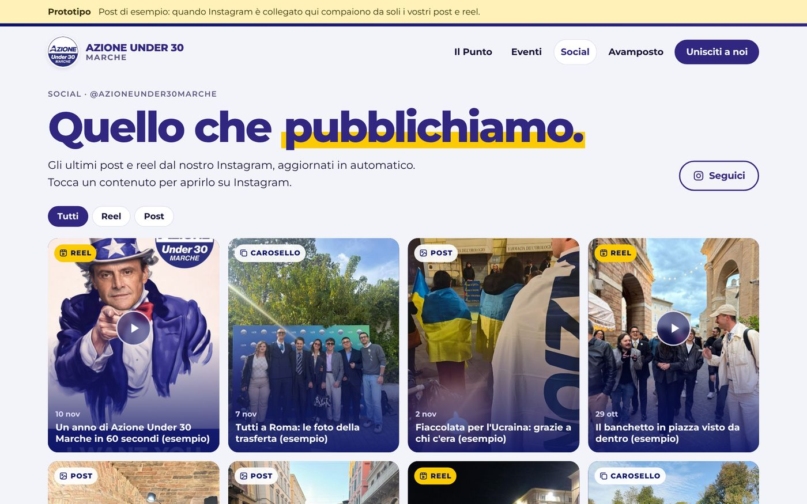
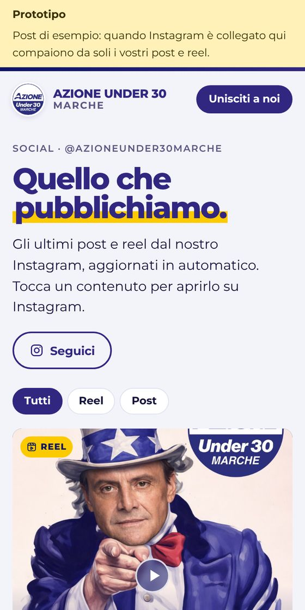

La porta d'ingresso
Chi arriva capisce subito chi siamo e dove andare: leggere la rassegna, entrare nell'Avamposto, venire a un evento.
- «Liberali, europeisti, mai noiosi»: identità Azione 2026 (blu, blu notte, un tocco di giallo)
- Chi siamo con il nostro reel e le foto del gruppo
- Unisciti a noi: tesseramento ad Azione, iscrizione alla newsletter, contatti, Instagram e Discord

Il Punto, la rassegna stampa
Ogni mattina la rassegna politica preparata in automatico e pubblicata alle 8: solo politica estera, nazionale e regionale, niente cronaca né sport, riassunti neutri con il link alla fonte originale.
- «Il Punto in 30 secondi» con le tre notizie d'apertura
- Versione audio da ascoltare in macchina o a lezione, con velocità regolabile
- Per ogni notizia uno spunto per i social, in linea con le posizioni di Azione e basato solo su dichiarazioni recenti dei nostri esponenti
- Archivio di tutte le edizioni


Eventi
Tutti gli appuntamenti nelle Marche con le locandine: aperitivi, incontri, banchetti, dirette, formazione.
- Il prossimo appuntamento in evidenza con il conto alla rovescia
- Calendario mensile con la locandina dentro il giorno
- Scheda di ogni evento: Maps, aggiungi al calendario, condividi su WhatsApp
- Filtri per tipo e per provincia; «Serve una mano» per gli eventi che cercano volontari

Avamposto, l'area riservata
Qui si impara a fare politica. Iscrizione gratuita con la mail, senza password: ricevi un link e sei dentro.
- Corsi e formazione: video, dirette su Meet, PDF e testi; accesso libero o su richiesta, con approvazione dello staff, inserimento manuale o link d'invito
- Agenda e mobilitazione: gli appuntamenti che cercano volontari, con turni, punto di ritrovo, kit e il pulsante «Ci sono»
- La squadra: l'organigramma regionale con i gruppi di lavoro, i referenti e i canali WhatsApp
- Repliche delle dirette, visibili solo agli iscritti
- Ognuno segna cosa ha già visto e riprende da dove era rimasto


Gestione, senza toccare codice
Lo staff regionale gestisce tutto da un pannello, con un'unica mail condivisa.
- Crea corsi e iniziative, carica materiali e copertine, approva le richieste
- Pubblica eventi con locandina, turni e kit per i volontari; vede chi ha aderito e copia l'elenco per WhatsApp
- Aggiorna la squadra, le foto e i link dei canali
- Elenco iscritti esportabile


Fatto per bene, dall'inizio
Informativa allineata a quelle del partito (sostenitori, formazione, eventi, volontari, newsletter), con il DPO di Azione indicato.
Iscritti, corsi, adesioni ed eventi sono su server a Francoforte. Nessun cookie di profilazione, nessuna statistica, nessuna pubblicità.
Le regole del database impediscono di vedere materiali non autorizzati, approvarsi da soli o diventare amministratori.
Ognuno scarica o cancella i propri dati da solo. Account inattivi cancellati dopo 24 mesi, adesioni ai turni dopo 12.
L'organigramma con i nomi e i canali WhatsApp è visibile solo agli iscritti, non sul sito pubblico.
Hosting, database e invio mail su piani gratuiti. Nessun costo fisso.
Cosa manca per partire
- Accendere l'area riservataCollegamento del database (Supabase, server in Europa): attiva iscrizioni, corsi, eventi, squadra e mobilitazione.
- Mail di accessoServizio di invio gratuito per i link d'accesso e, più avanti, per la newsletter.
- Collegare InstagramDa quel momento post e reel arrivano sul sito da soli.
- Prova con un gruppo di ragazziIscrizione, richiesta di un corso, adesione a un turno, poi apertura a tutti.
Social
Ogni reel e ogni post che pubblichiamo su Instagram compare da solo sul sito, nella pagina Social e in anteprima in home. Nessun lavoro in più per chi gestisce i social.

